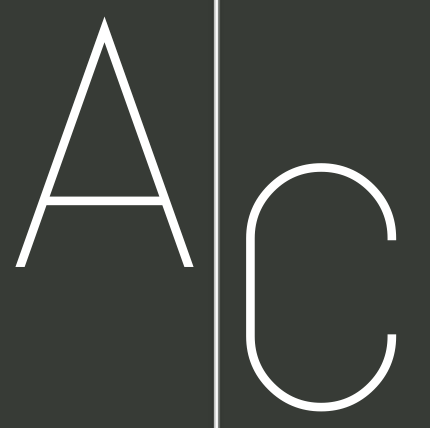
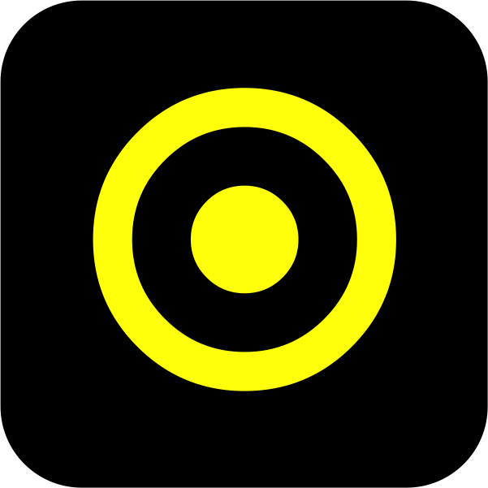
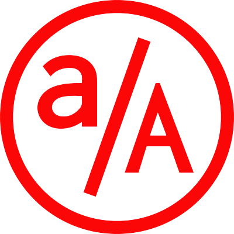

Projects
Full Stack Projects
EVENTBOOST
A ticket application site with crowd funded events
⚒ Maintained the MVC patterns on the Rails framework to ensure data calculations and transmissions run reactively within expected scalability
⚒ Improved the website loading stability and response speed through eliminating unnecessary HTTP requests, cutting down external scripts and bringing them in via CDN plugins and implementing page caching in the production environment
⚒ Designed and updated customized features on React.js with sample tests to check admin and users have proper permission to assess specified data
CITY OF CHINESE FOOD
A Chinese food ordered and dinning reservation platform
⚒ Implemented token authentication, custom email contact and payment process features on django REST framework
⚒ Incorporated Stripe API to support real-time payments for customers and maintained API version to provide compatibility and simplicity
⚒ Optimized raw images through loading via Cloudinary API, cropping out unneeded areas and modifying the resolution

AudioCloud
A tracks streaming and playing website
⚒ Implemented track create feature with React to allow the user create their own track on the site
⚒ Incorporated Cloudinary API to store user’s images and audios and response the secure URLs to the database
⚒ Designed pages layout to smoothly render content based on the demo session, homepage, and track show page
Web Games

Twenty-forty-eight
An educational website game with mathematical logic
⚒ Optimized the scoring algorithm with various scaled runtime tests on the server side in Node.js framework
⚒ Performed a smooth and dynamic UX design with intuitive controls in jQuery that supports animation effect and AJAX calls on client side
⚒ Accessed CSS contents from MaxCDN and CloudFlare to avoid the internet traffic and to improve the game response speed
Front End Designs
Sphere Inc.
An interactive calendar page, UI Design
⚒ Applied backtracking algorithm on the backend to fetch and compare the values of two given tiles, and updated the most optimized step in each possible move
⚒ Designed dynamic UX by importing GoogleApi and Cloudflare library binds with CSS keyframe animation to provide smooth visual effects and intuitive controls
Sphere Inc.---UI
An interactive calendar page, Front End Design
⚒ Applied backtracking algorithm on the backend to fetch and compare the values of two given tiles, and updated the most optimized step in each possible move
⚒ Designed dynamic UX by importing GoogleApi and Cloudflare library binds with CSS keyframe animation to provide smooth visual effects and intuitive controls
QUIPT Inc.
A solo-designed demo website with animation effects
⚒ Generated animation effects on the page by creating css keyframes functions and switched-state contents
⚒ Trigged the page effects through implementing jQuery library and sending JS calls to the page
Back End Projects
ATM Banking Application
A banking application that allows user to deposit, withdraw and check balance
⚒ Extracted deep visual features from a pre-trained VGG ImageNet and trained models on Tensorflow framework
⚒ Improved model performance by using dating transforms, algorithm tuning and ensemble methods
Machine Learning
PAINT AS ARTISTS
An pattern learning project that generate stylized pictures
⚒ Extracted deep visual features from a pre-trained VGG ImageNet and trained models on Tensorflow framework
⚒ Improved model performance by using dating transforms, algorithm tuning and ensemble methods
Achievement
University of California, Davis
B.S. Computer Science 2016
⚒ Dean’s List 2014
Courses completed: Machine Learning, Operating System, Computational Theory, Data Structure and Algorithm
 App Academy
Full Stack Web Developer 2017
1000hrs immersive full stack web development intensive with < 3% acceptance rate
Course focus on: Pair Programming, Design Pattern, Coding Style, Algorithms, Scalability, Security, OOP, TDD